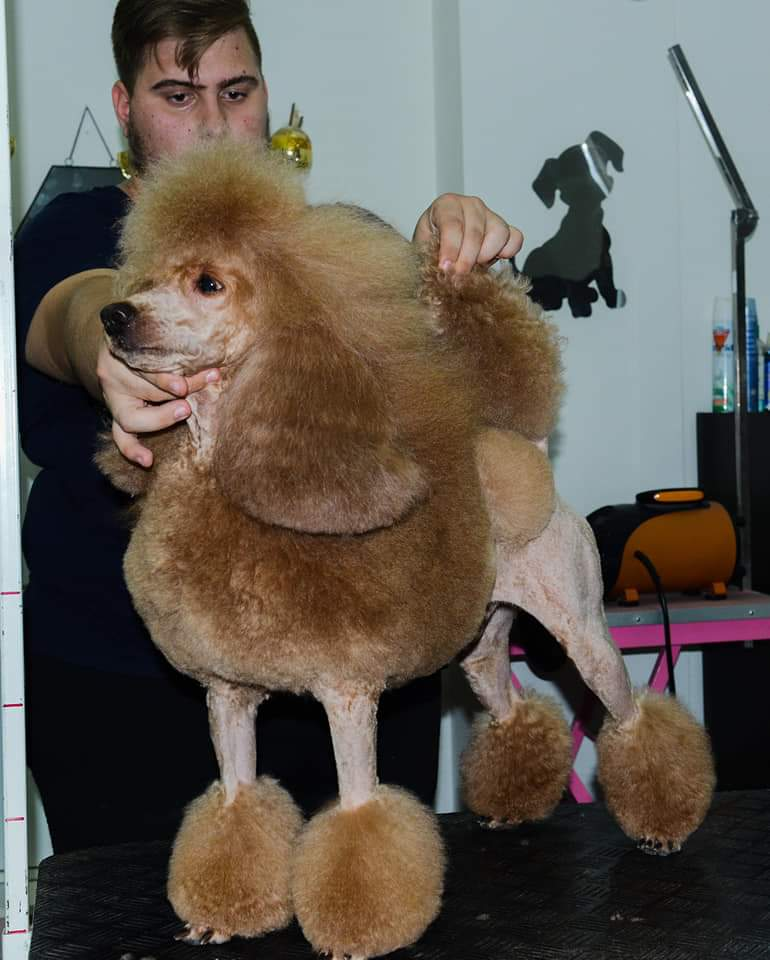
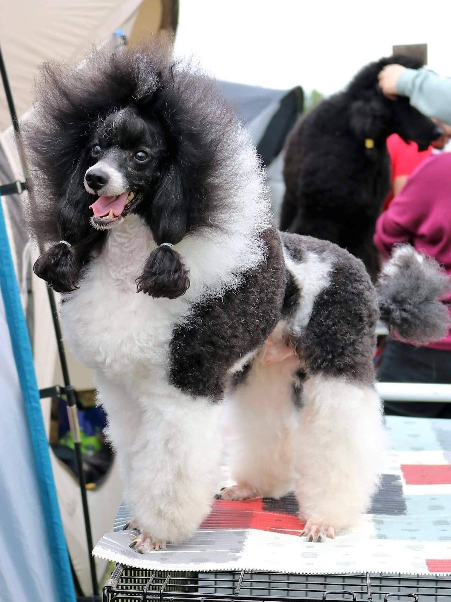
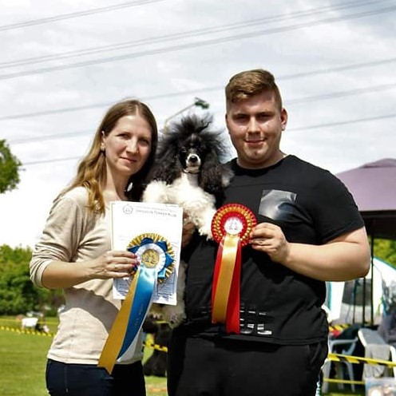
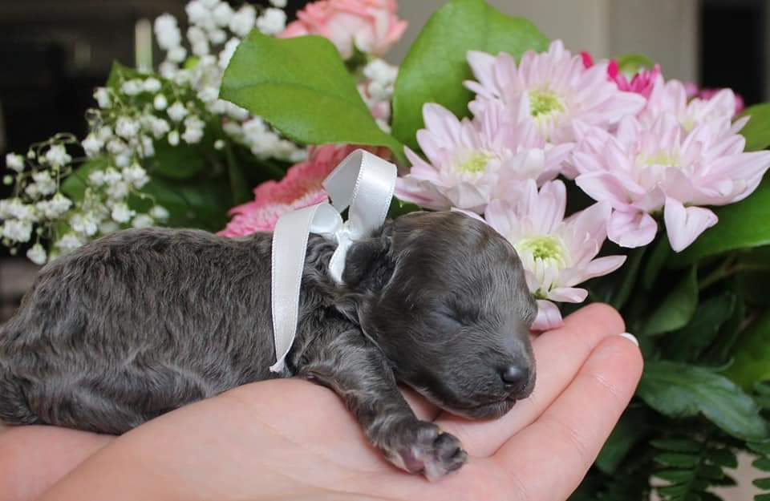
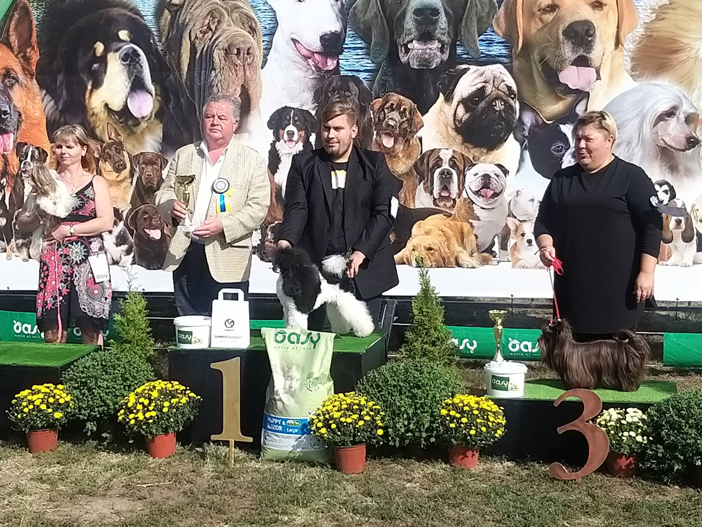
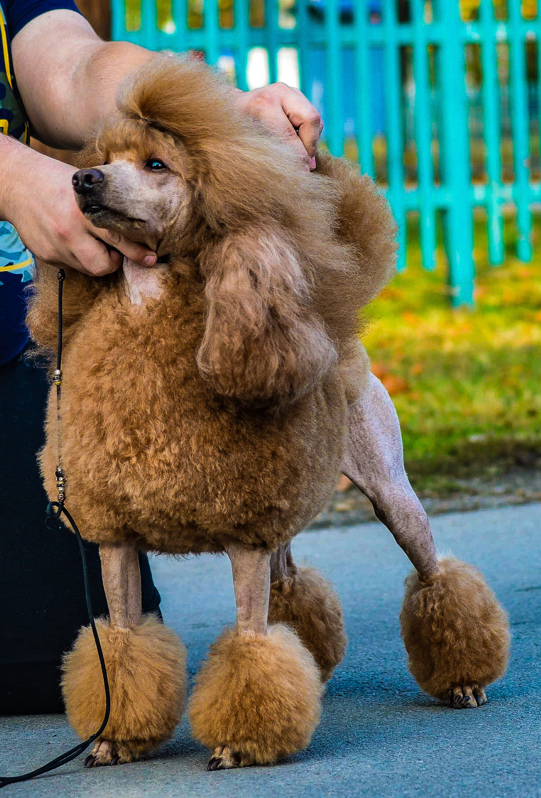
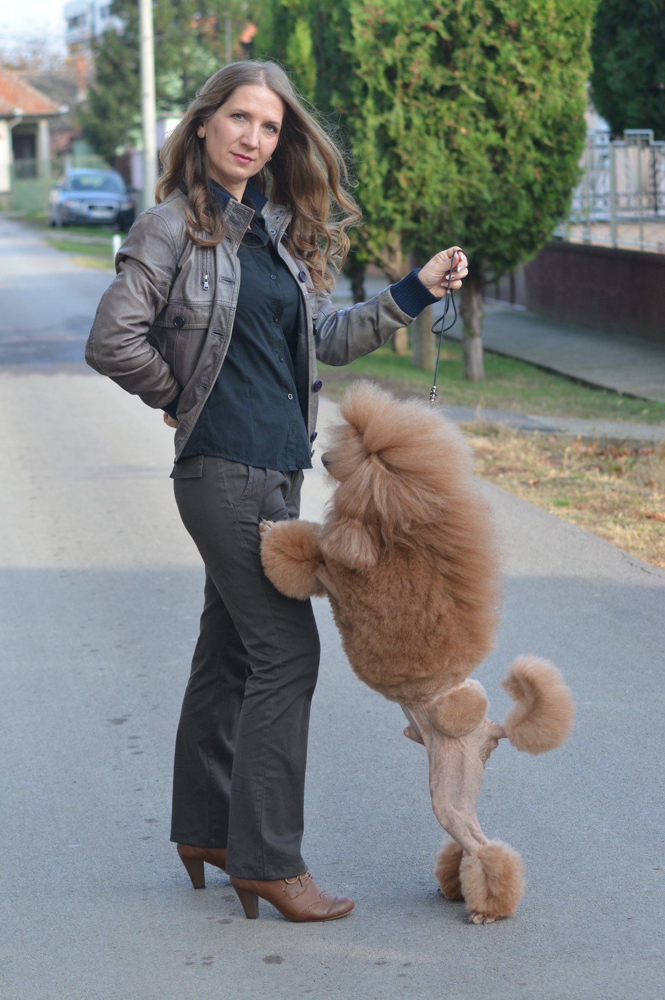

Leo sa kontinental klipom! Grumer je bila izvrsna Bojana ilićJo-Jo se odmara pre izlaganja 1/2Jo-jo na CACIB-u u Budimpešti sa vlasnicima, Hajnalkom i Darkom Spasić Jo-Jo se odmara pre izlaganja2/2Beba RinaGlaša sa jednim od svojih prvih peharaNa izložbi sa prijateljima iz HrvatskeŠtnac Elipso je našao svoj novi dom u Mađarskoj"Hvala na trudu! Darko je napravio od Glaše (GRACE SEA OF HAPPINESS ) šmpiona!"-Ljubazan komentar Tatiane Romanove, Glašinog odgajivačaLeo, sveže ošišan pred izložbuHajnalka Spasić i LeopoldDžesika, poslednji detalji pred izlaganje